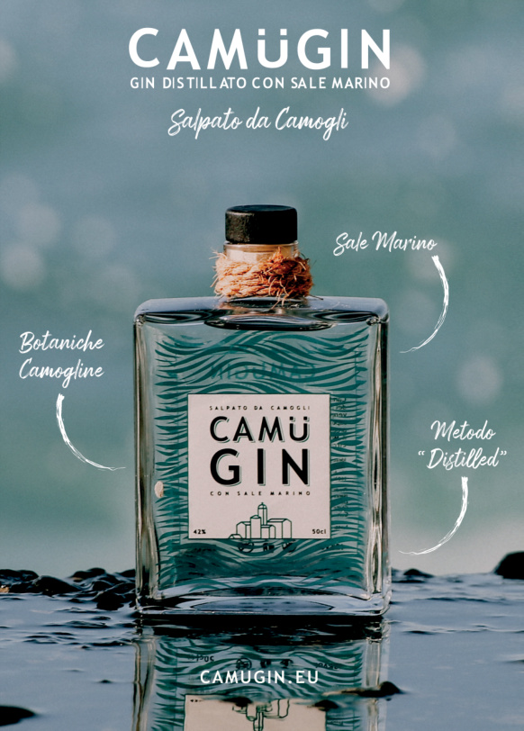
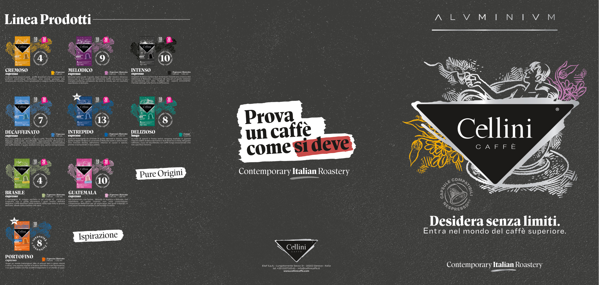
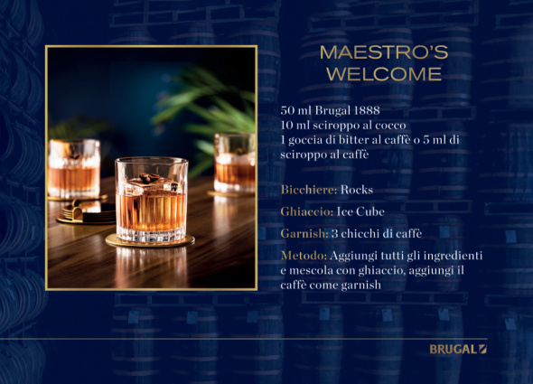
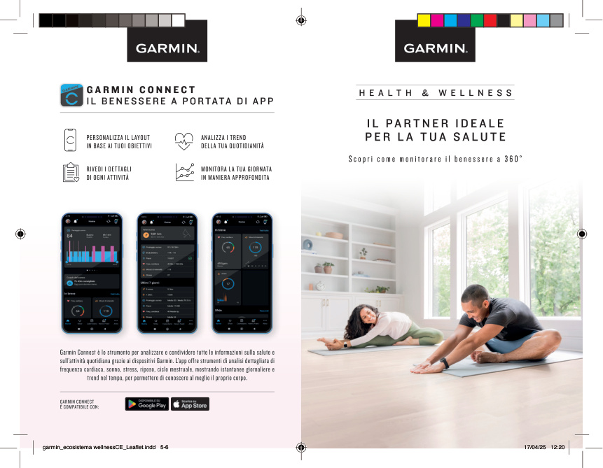
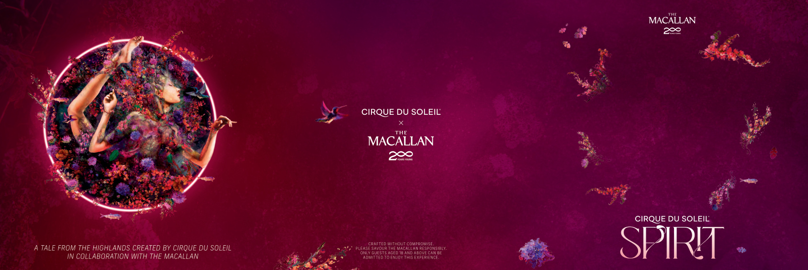
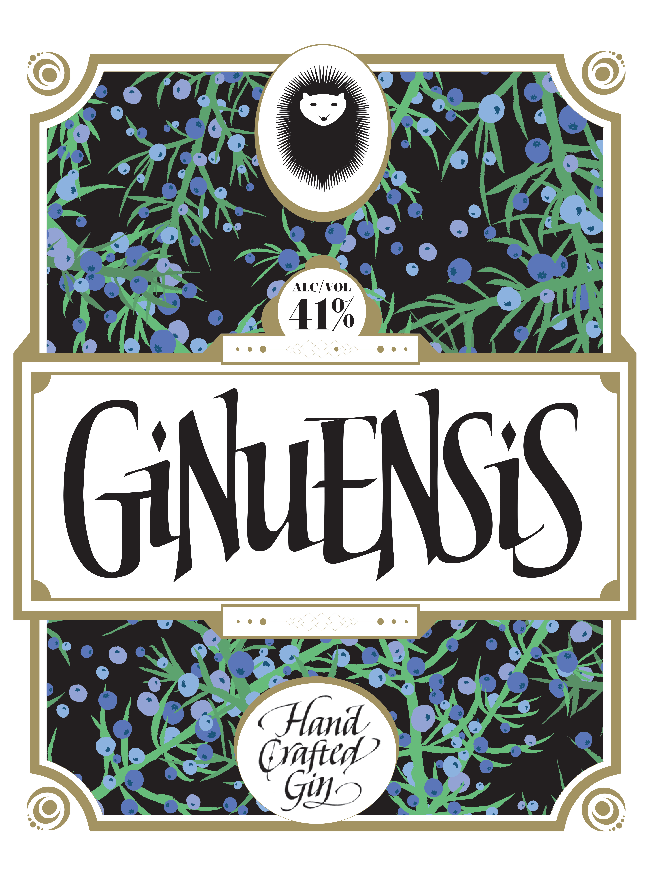

01 · PRODOTTO / CAMPAGNA
Camügin
Comunicazione di prodotto e direzione visiva
Mi occupo di graphic design e comunicazione visiva, trasformando idee e identità in progetti che prendono forma tra editoriale, packaging, advertising e digitale.
Lavoro nel mondo del graphic design, tra identità visiva, editoriale, packaging e advertising. Oggi sto ampliando questo percorso verso UI, UX e Product Design.
Questa selezione raccoglie alcuni dei progetti e delle esperienze che hanno fatto parte del mio percorso nel graphic design.

Comunicazione di prodotto e direzione visiva

Sistema editoriale per una torrefazione italiana contemporanea

Comunicazione premium e progettazione editoriale

Comunicazione digitale di prodotto e sistema wellness

Comunicazione per evento premium e storytelling visivo

Packaging e identità visiva locale
Concept visivo, art direction, tipografia, composizione, layout, identità visiva, editoriale e packaging.
Esecutivi di stampa, grande formato, preparazione immagini, packaging e adattamento multi-formato.
Disponibile per progetti freelance e collaborazioni selezionate.